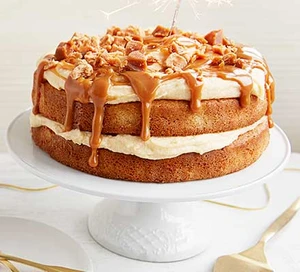

Easy caramel cake

Ingredients
- 225g softened salted butter, plus extra for the tins
- 125g golden caster sugar
- 100g light brown soft sugar
- 1 tsp vanilla extract
- 4 large eggs
- 225g self raising flour
- 2 tbsp milk
- toffee, chocolate or caramel pieces, to decorate
For the icing
- 200g softened salted butter
- 400g icing sugar (golden icing sugar if you can find it - it adds a golden colour and caramel flavour)
- 70g caramel sause, dulce de leche or caramel spread, plus 3 tbsp to serve
Method
- Heat the oven to 180C/160C fan/gas 4. Butter two 20cm springform tins and line the bases with baking parchment.
- Beat the butter and both sugars in a bowl with an electric whisk for a few mins until lighter in colour and fluffy. Add the vanilla and the eggs, one at a time, adding a spoonful of flour and beating in between each egg. Add the remaining flour and milk. Divide between the cake tins and bake for 25-30 mins until they’re golden, spring back when pressed, and a skewer comes out clean when inserted into the middle. Cool in the tins for a few mins, then tip out and leave to cool completely on a wire rack.
- Meanwhile, for the icing, put the butter and icing sugar in a bowl and whisk for a few mins until light and airy. Whisk in the caramel briefly, adding 1 tbsp of boiling water to loosen, if needed. Set aside until the sponges are completely cool before assembling, or the icing will melt.
- Use half the icing to sandwich the cakes together, then spread the remainder over the top, smoothing it out with a knife or the back of a spoon. Leave in a cool place until ready to serve. Drizzle with the 3 tbsp extra sauce (warm briefly in the microwave if it’s a little stiff), allowing some to drip down the sides if you like, and scatter over the toffee, chocolate or caramel pieces to serve. Edible glitter, birthday candles or sparklers, optional.
- For chocolate lovers, add 3 tbsp cocoa to the cake batter and drizzle over melted and cooled chocolate instead of more caramel. You could also top with chopped nuts, sprinkles or edible flowers depending on who you’re making it for.